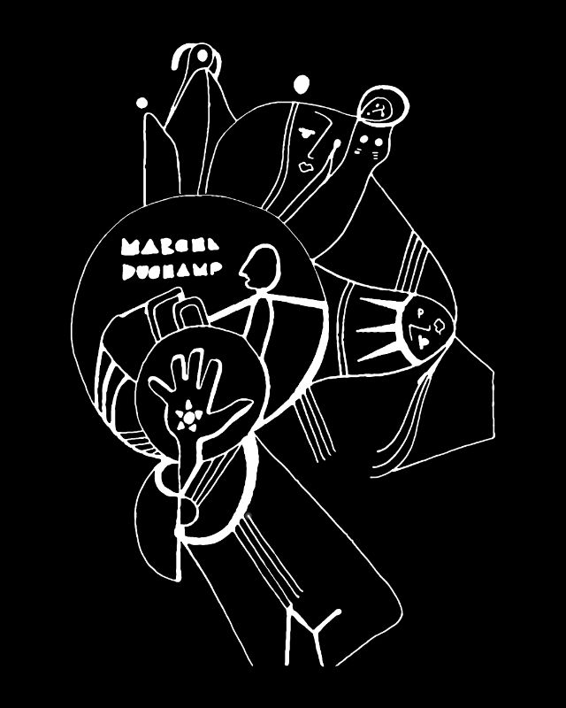

Sketchory
Eine Kritzelkarte zeichnet sich von selbst: Foto oder Scan laden, einen Satz schreiben, und es entsteht ein Video im Hochformat. Die Karte zeichnet sich Strich für Strich, der Satz erscheint Buchstabe um Buchstabe, am Schluss das Signet. Alles im Browser.
Öffnen